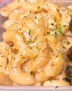

Cajun Mac N Cheese
Home

Description
Delectable macaroni and cheese with cajun seasoning!
Ingredients
- 280ml Low Fat Milk
- 150g Light Cream Cheese
- 35g Shredded Light Cheddar
- 35g Shredded Mozzarella
- 450g Cooked Macaroni
- 8 tsp Cajun Seasoning Mix
Steps
- On low heat, add: low fat milk, light cream cheese, cheddar, mozzarella, and cajun seasoning mix.
- Stir until creamy and cheesy.
- Add cooked macaroni and mix until combined.